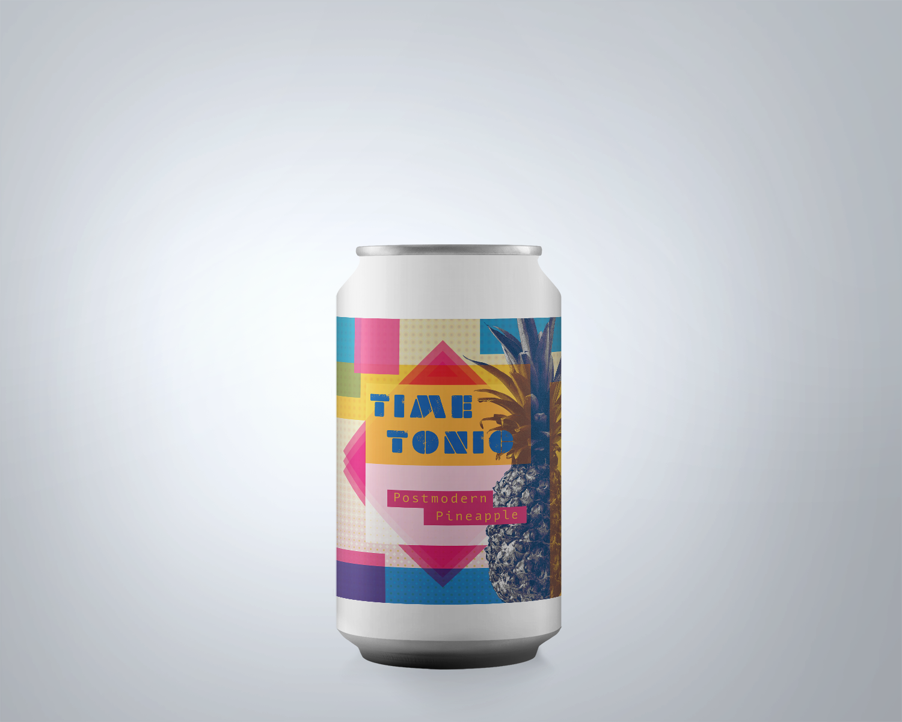
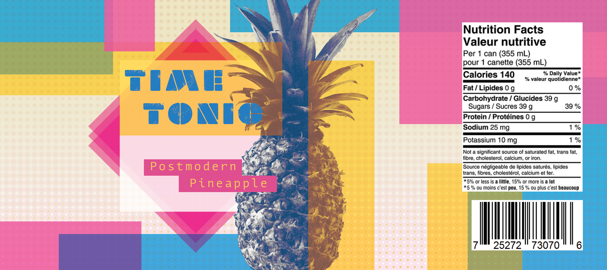

Time Tonic
 1970s - Postmodernism
The radical nature of the 60s persisted into the 1970s, leading to the one of the most experimental decades of design. Rule-breaking defined the Postmodern movement that began in the 1970s, with designers rejecting the constraints of orderly modernism in favour of self-expression and innovation. This shift reflected the changing cultural climate towards improved equality and diversity.
This movement encompasses a broad range of visual aesthetics, but works described as Postmodern all share the characteristic of unconventionality. Postmodern design was marked by bold colours, layered, multimedia collages with multiple textures, and inventive type made possible by revolutionary typesetting technology which allowed for freeform type and freedom with spacing and scaling. The functionality of design was no longer a priority that influenced the form. Rather, the inclusion of a form in space was driven by intuition.